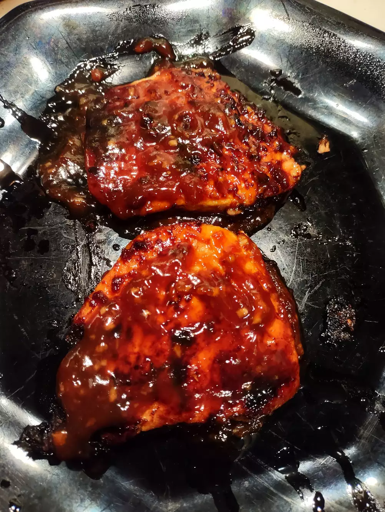

World's Best Honey Garlic Pork Chops

Description
When the weather is nice, take your pork chops outside and throw them on the grill. Not only will they cook up quickly, but they'll also get the tasty grill marks that everyone loves.
Grilling pork chops is incredibly simple, all you have to do is preheat your grill to medium heat and oil the grate. Then lightly brush the glaze over the chops and sear them on both sides until they are no longer pink in the middle.
Ingridients
- ½ cup ketchup
- 2⅔ tablespoons honey
- 2 tablespoons low-sodium soy sauce
- 2 cloves garlic, crushed
- 6 (4 ounce) (1-inch thick) pork chops
Steps
- Preheat grill for medium heat and lightly oil the grate.
- Whisk ketchup, honey, soy sauce, and garlic together in a bowl to make a glaze.
- Sear the pork chops on both sides on the preheated grill. Lightly brush glaze onto each side of the chops as they cook; grill until no longer pink in the center, about 7 to 9 minutes per side. An instant-read thermometer inserted into the center should read 145 degrees F (63 degrees C).